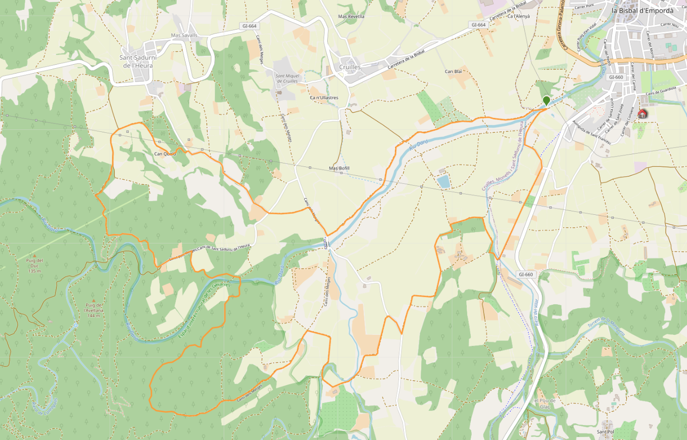

Marxa 2021
Tenim el plaer de presentar-vos la XLII edició de la Marxa de l'Arboç.
Recorregut
En l'edició d'enguany es proposa un únic recorregut de 14.82 km de distància i 202 m de desnivell.
Podeu consultar el recorregut i el perfil de la ruta proposada a Wikiloc.
Inscripcions
Degut a la situació de pandèmia, l'organització encoratge a tots els participants a optar per la inscripció anticipada, ja sigui en un dels establiments que a continuació s'indiquen, o, preferiblement, a través del formulari online. De totes formes, es manté la tradicional inscripció física (targeta i bolígraf) el moment abans de la sortida.
Inscripció anticipada
La inscripció anticipada permet al marxaire incriure's de forma segura i sense cues. El dia de la marxa simplement ha de donar el seu nom i pagar 6€ per tal que se li faci entrega del clàssic bracelet identificatiu, que li dona accés als habituallaments i li permet rebre un obsequi. És la modalitat d'inscripció que l'organització aconsella.
| Inscripció | Descripció | Import |
|---|---|---|
| Inscripció anticipada online | A través del formulari online (clicka'm) | 6€ |
| Inscripció anticipada física | Intersport: Carrer dels Valls, 8, 17100 La Bisbal d'Empordà BlackIsard: Carrer de l'Aigüeta, 170, 17100 La Bisbal d'Empordà |
6 € |
Inscripció tradicional
La inscripció tradicional es realitza el mateix dia de la marxa, abans de la sortida, en una targeta de paper. L'organització no pot garantir que no hi hagi cues, i prega respectar les distàncies a tots els marxaires que optin per aquesta modalitat d'inscripció. El pagament es fa in-situ, en efectiu, i té un cost de 7€. En aquest moment es fa entrega del bracelet identificatiu, que dona accés als habituallaments i permet rebre un obsequi.
| Inscripció | Descripció | Import |
|---|---|---|
| Inscripció tradicional física | Es realitza el moment abans de la sortida, en paper, tal i com es porta dècades fent. | 7€ |
Horaris
La sortida s'efectuarà des de la Piscina Municipal de La Bisbal d'Empordà, al Carrer Font de l'Arbre, s/n. La ruta és circular. S'habilitarà una zona d'aparcament
| Hora | Descripció |
|---|---|
| 7:00 - 9:00 | Pagament i recollida del bracelet. Inscripció tradicional física. |
| 13:00 | Tancament marxa. |
Habituallaments i obsequi
Per motius sanitaris, aquest any no se'ns permet donar entrepans. El marxaire, identificat amb el bracelet, podrà gaudir de:
- Fruita.
- Aigua, refrescs, vi.
- Obsequi